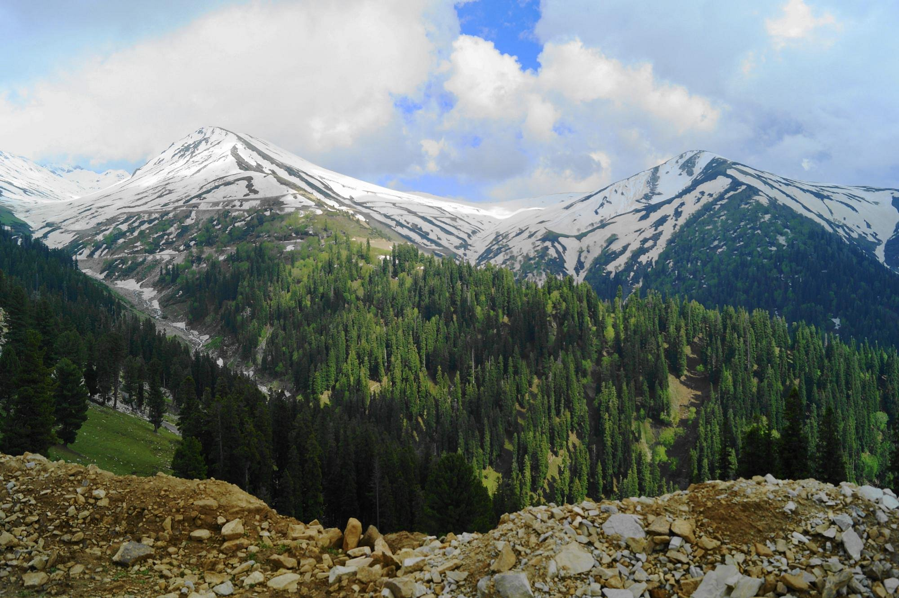
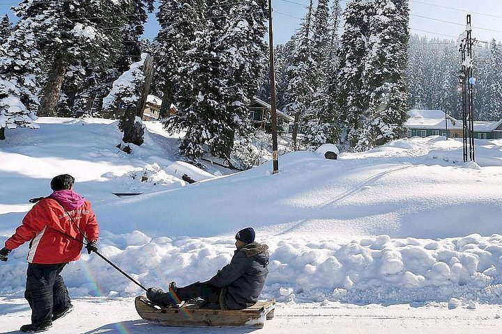

BackPackers

Explore Jammu and Kashmir- A Land of Endless Beauty
If there is a heaven on earth, it is here, it is here, it is here!”- beautifully quoted by Emperor Jahangir on Kashmir back in the 17th century, this quote still holds true almost 4 centuries later.The state is popular for its picturesque beauty, the pashmina shawls and the many blue lakes that dot the Himalayan terrain here. The state is a religious amalgamation with natives practicing Islam, Buddhism, and Hinduism. There's naturally a lot of cultural diversity to be explored here. And don't forget the mouth-watering Kashmiri cuisine 'Wazwan'.
Top 10 attractions in Kashmir

Dal Lake
Dal is a lake in Srinagar, the summer capital of the Indian-administered Jammu and Kashmir in the disputed Kashmir region.It is an urban lake, the second largest lake in Jammu and Kashmir, and the most visited place in Srinagar by tourists and locals.
Tulip Garden
The Indira Gandhi Memorial Tulip Garden, formerly known as SirajBagh is one of the most popular and hot-spot tourist destinations in Srinagar Kashmir. It was opened in 2007 with the aim to boost tourism sector in Kashmir. The garden is located at the foothills of Zabarwan Mountain and with its stunning array of tulips in full bloom, the garden is a sight to behold.
Sonamarg
Sonamarg is not really a large place. You hardly need to drive about 2 kilometers to get from one end of the village to another. It is located at an altitude of 2,730 meters (8,960 ft) and gives rise to the ‘Three Sisters’— a group of rivers (the Lidder, Sind, and Neelum) that run parallel to each other and serve as tributaries for the Jhelum River. Sonamarg has no permanent settlement because it remains inaccessible during the winter season.

Betaab Valley
The valley is the most scenic and attractive place for tourists. If you are an adventure lover then the valley offers you many outdoor adventure activities. Here in this valley you can also enjoy the trekking within the beautiful mountains and valleys. If you are planning to have some beautiful vacations, the valley is the best place to enjoy vacations here in Kashmir.
Nishant Garden
Design and layout of the Nishant Bagh is largely influenced by Persian architecture. It has a beautiful water channel flowing through the middle, which further adds to the romantic charm of the garden. Nishat Bagh is famous for its 12 terraces decorated with beautiful flowers like roses and lilies with each terrace representing a zodiac sign.
Srinagar
Famously known as 'Heaven on Earth, Srinagar is located in the union territory of Jammu & Kashmir, on the banks of river Jhelum. Srinagar is known for the stationary houseboats and gondola-type rowboats Srinagar is the dream destination for honeymoon and family holidays.

Gulmarg
Gulmarg is one of the top honeymoon destinations in India. Gulmarg has also been developed as an adventure hub as the Indian Institute of Skiing, and Mountaineering is located here. A lot of courses on trekking, mountaineering, skiing, and snowboarding are offered by IISM. There are a lot of other private tour operators in Gulmarg as well, which provide similar courses and facilities for skiing and snowboarding. Known for its scenic beauty, Gulmarg has also been a popular destination for shooting various Bollywood films.
Pari Mahal
Pari Mahal or The Angels' Abode is a seven terraced garden located at the top of Zabarwan mountain range over-looking city of Srinagar and south-west of Dal Lake The architecture depicts an example of Islamic architecture and patronage of art during the reign of the then Mughal Emperor Shah Jahan.
Yusmarg
Yusmarg is a perfect getaway for nature lovers and adventure enthusiasts. There is no shortage of attractions in Yusmarg and they range from holy shrines to meadows to alpine lakes. The foaming river Dudhganga, the alpine lake, Nilnag Lake, the meadows of Tosa Maidan, Sang-e-Safed, and the sacred shrines of Charar-e-Sharief and Pakharpora are the popular places to visit & things to do in Yusmarg.

Sinthan Top
Located between Kishtwar and the Breng valley in the Anantnag district, Sinthan Top is a steep mountain pass that is one of Kashmir’s less well-known tourist spots. But most of it is located on the Kishtwar side. You are undoubtedly aware of this exquisite location’s breathtaking splendour if you have visited. This mountain pass ought to be high on your list of places to see if you haven’t already and are considering a trip to Kashmir..
Kashmir Tour Packages
Private 5-Day Kashmir Package Tour
23,999/-
6 Days and 5 Nights Family Tour of Kashmir
INR 33500 (-16%off)
27,099/-
Pahalgam Gulmarg Srinagar Tour
INR 22500 (-30%off)
17,999/-
